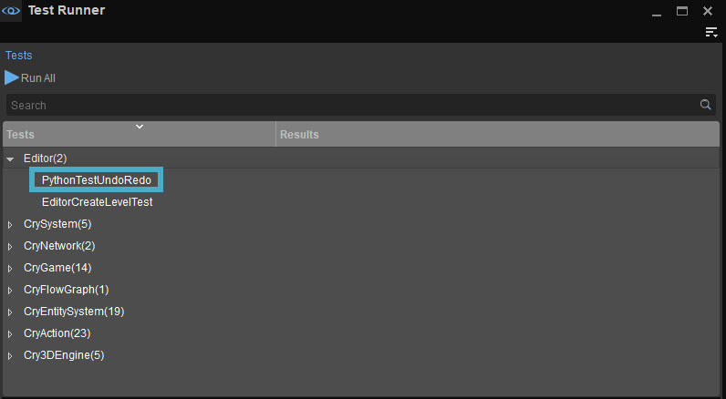

Overview
The undo/redo feature test is used to test the undo/redo system in an automated way, reducing the regressions introduced by new changes.
The way this is done is by reproducing critical test cases with a set of python scripts. The state of the objects involved in the test will be compared before and after these tests to make sure they are correct.
In the current implementation this means that the serialized state of an object before and after a single test must be the same.
Serialization
The serialization of objects is carried out automatically and their state is saved in an .xml file structured like the following:
<Object Type="Group" Layer="Main" LayerGUID="656e7504-5d5c-d3f5-6ac4-59a5b87b9765" Id="77a40a99-428b-b304-cbd9-efaaacba4516" Name="Group-1" Pos="523.25,501.5,32" Rotate="1,0,0,0" Scale="1,1,1" ColorRGB="65280" UseCustomLevelLayerColor="0" MinSpec="0" Opened="1">
<Objects>
<Object Type="Brush" Layer="Main" LayerGUID="656e7504-5d5c-d3f5-6ac4-59a5b87b9765" Id="ae7e377b-928d-dfaa-5c2f-3fac5acbf4df" Name="primitive_cube-1" Parent="77a40a99-428b-b304-cbd9-efaaacba4516" Pos="-1.5,0,0" Rotate="1,0,0,0" Scale="1,1,1" ColorRGB="16777215" UseCustomLevelLayerColor="0" MinSpec="0" MatLayersMask="0" Prefab="objects/default/primitive_cube.cgf" IgnoreVisareas="0" CastShadowMaps="1" GIMode="1" RainOccluder="1" SupportSecondVisarea="0" DynamicDistanceShadows="0" Hideable="0" LodRatio="100" ViewDistRatio="100" ExcludeFromNavigation="0" NoDynamicWater="0" AIRadius="-1" NoStaticDecals="0" RecvWind="0" Occluder="0" DrawLast="0" ShadowLodBias="0" IgnoreTerrainLayerBlend="0" IgnoreDecalBlend="0" RndFlags="180060000408">
<CollisionFiltering>
<Type collision_class_terrain="0" collision_class_wheeled="0" collision_class_living="0" collision_class_articulated="0" collision_class_soft="0" collision_class_particle="0" gcc_player_capsule="0" gcc_player_body="0" gcc_vehicle="0" gcc_large_kickable="0" gcc_ragdoll="0" gcc_rigid="0" gcc_vtol="0" gcc_ai="0"/>
<Ignore collision_class_terrain="0" collision_class_wheeled="0" collision_class_living="0" collision_class_articulated="0" collision_class_soft="0" collision_class_particle="0" gcc_player_capsule="0" gcc_player_body="0" gcc_vehicle="0" gcc_large_kickable="0" gcc_ragdoll="0" gcc_rigid="0" gcc_vtol="0" gcc_ai="0"/>
</CollisionFiltering>
</Object>
</Objects>
</Object>This is a group with one brush object as a child.
Each <> represents a node; <Object> is a node tag, the rest of the key-data pairs inside a node are the Node Attributes.
Nodes in more indented levels are children of the nodes in less indented levels.
Testing
The undo system supports many different kinds of undos such as undo group detach/attach, prefab extract all, etc, with different setup conditions. For this reason, the actions that are required to set up and execute a single test and its components are exposed via python scripts. This way it is possible to expose editor actions via a flexible and simple scripting language and test Sandbox python APIs at the same time.
A script is composed of the following elements:
- An objectsToTest list where all the objects to be serialized are added;
- A setup() function that prepares the test, instantiate all necessary objects and adds them to the objectsToTest list;
- An executeTest() function that execute the test actions;
- A cleanup() function that deletes all objects created for this test.
The testing system executes all .py scripts found in the Test folder the following way:
- It calls setup() function;
All the objects added to the objectsToTest list are serialized in xml archives, each with a root tag called "PreTest";
The serialization takes place on the C++ side of the framework and an .xml archive is created in memory for each object to be tested.- It calls executeTest() function;
- All the objects added to the objectsToTest list are serialized in xml archives, each with a root tag called "PostTest";
- The archives serialized before executeTest are compared with the archives serialized after executeTest in the order they are added to the objectsToTest list;
Calls cleanup() function.
All Phyton scripts can be placed in the folder <Engine installation directory>/Editor/Scripts/Test.
A test named Editor/PythonTestUndoRedo on the Test Runner can be used to execute all the tests in this folder.
For more information about Test Runner, please refer to the Test Runner page.

Custom Test Example
Following is a commented test script example that attaches an object to a group, undoes this and checks if both actions have been performed successfully.
This example can be used as a reference when a custom test is being created:
import sandbox
# How many objects we want to attach
OBJECT_COUNT = 2
# The brush geometry file we want to spawn
ASSET_FILE = "objects/props/fishing_camp/camping_chair.cgf"
# The name of the Group object
GROUPNAME = "Group"
# The objects to attach to our group
objects_to_add_to_group = []
# The objects that will be tested for differences, this list needs to be instantiated
# for the test to work
objectsToTest = []
def setup():
"""
Prepare the test, instantiate all necessary objects and add them to the objectsToTest
list. After this function ends all the objects in the objectsToTest list will be
serialized into archives.
"""
# First create a group
sandbox.general.new_object(GROUPNAME, "", GROUPNAME, 520, 500, 32)
# Then create and add the brushes to the list of objects to attach to the group
for i in range(OBJECT_COUNT):
object_name = "test-group" + str(i)
sandbox.general.new_object("Brush", ASSET_FILE, object_name, 520, 500 + (i * 5), 32)
# Add all the brushes to the list of objects to serialize and test
objectsToTest.append(object_name)
objects_to_add_to_group.append(object_name)
# And then add the group itself
objectsToTest.append(GROUPNAME)
def executeTest():
"""
Execute the test, after this function ends the objects in the objectsToTest
will be serialized one more time and then compared to the archives serialized
just after the end of the setup function.
"""
# Attach all the objects to the group
sandbox.group.attach_objects_to(objects_to_add_to_group, GROUPNAME)
# Undo the operation
sandbox.general.undo()
def cleanup():
# This destroys every object created for this test
for object in objectsToTest:
sandbox.object.delete(object)